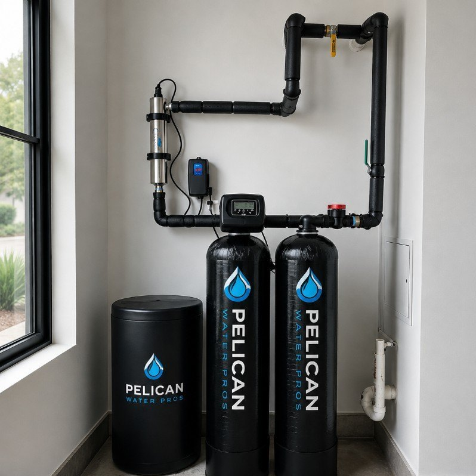
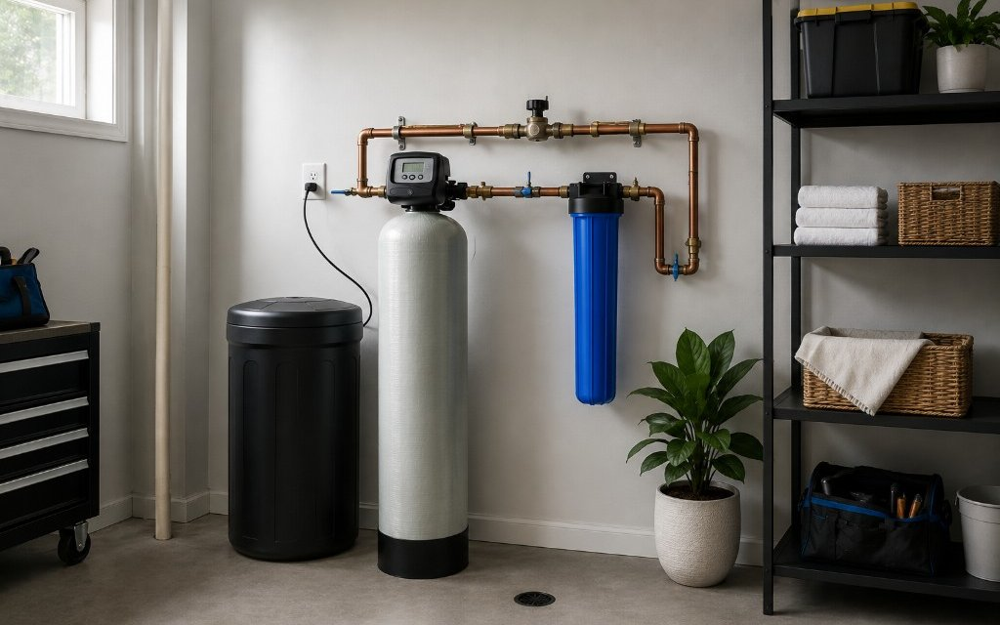

Whole-Home Water Filtration Services
Improve water quality throughout your entire home with filtration systems designed to reduce unwanted contaminants, odors, sediment, and common water concerns from every tap.
Explore servicePelican Water Pros helps Prairieville property owners compare practical filtration options for cleaner, better-tasting water at home or work. From under-sink reverse osmosis units to whole-house water filtration systems, Pelican Water Pros offers clear guidance, responsive support, and product recommendations that align with daily usage, property layout, maintenance expectations, and common local water concerns.
Practical help starts here
Better water, less hassle
Serving Prairieville, LA and surrounding communities.
OUR SERVICES • COMPREHENSIVE WATER FILTRATION SOLUTIONS
Our services include whole home water filtration, reverse osmosis drinking water systems, water softeners, carbon filtration, well water treatment, and city water treatment systems each designed to improve taste, reduce unwanted water concerns, and support cleaner water throughout your home.

Improve water quality throughout your entire home with filtration systems designed to reduce unwanted contaminants, odors, sediment, and common water concerns from every tap.
Explore service
Enjoy cleaner, better-tasting drinking water with advanced reverse osmosis systems that provide high-quality water for drinking, cooking, coffee, ice, and everyday use.
Explore service
Treat private well water concerns such as iron, sulfur odors, sediment, staining, and mineral issues with customized solutions built around your property’s water source.
Explore service
Reduce hard water minerals that can cause buildup on fixtures, dry skin, dull laundry, and strain on plumbing and appliances with a professionally installed water softener system.
Explore service
Improve taste and odor by reducing chlorine, chloramine, and other common water concerns with carbon filtration systems designed for fresher, cleaner water.
Explore service
Improve municipal water quality with treatment systems designed to reduce chlorine taste, odors, sediment, and other common city water concerns found in local homes.
Explore serviceFREQUENTLY ASKED ・ ANSWERS TO YOUR QUESTIONS
Find answers to common questions about filtration choices, replacement planning, and water quality concerns for Prairieville, LA homes and properties.
A water filter supplier can help identify filtration options for common issues like odor, sediment, chlorine taste, or particles affecting ice clarity. Pelican Water Pros helps Prairieville, LA homeowners compare whole-home water filtration, carbon filtration, and reverse osmosis drinking water systems based on fixture use, kitchen priorities, and everyday water concerns.
The comparison process is often fairly quick once water concerns, available space, and filter goals are clearly defined. Pelican Water Pros can walk Prairieville, LA condo owners through practical choices for compact kitchens, including under-sink reverse osmosis and point-of-use filters, then explain fit, maintenance, and expected day-to-day use.
Yes. A local water filter supplier should explain how different products support drinking, cooking, and high-use kitchen habits. Pelican Water Pros provides straightforward guidance on reverse osmosis systems, carbon filtration, replacement needs, and whole-home coverage so Prairieville, LA households can choose options that match real daily water use.
SERVICE AREA
Pelican Water Pros supports homeowners and property managers throughout Prairieville with practical water filtration guidance for kitchens, whole-house systems, and everyday drinking water concerns. Whether the property is near established neighborhoods, newer developments, or busy commercial corridors, Pelican Water Pros helps match filter products to taste, odor, sediment, and routine household usage.
Water Filter Supplier in Prairieville, LA, Water Filter Supplier near me, Water Filter Supplier, Whole Home Water Filtration Prairieville, LA, Reverse Osmosis Prairieville, LA, Water Softener Prairieville, LA